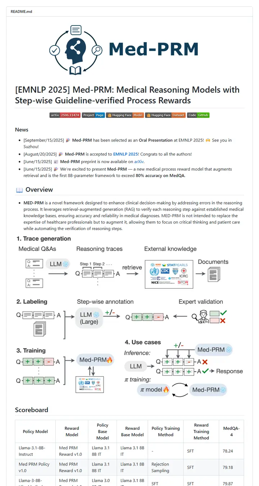

eth-medical-ai-lab/Med-PRM
A clinic's front desk: a navy wordmark over the door, a bracketed venue tag on the title, five color-coded tickets in a row, then the noticeboard, the process chart and the scoreboard in that order.

Checked against the rendered page. Badge hex values are the fills shields.io serves today and differ from METHOD_README.md's named-color table (e.g. red #dd4343 not #e05d44, brightgreen #44bb00 not #4c1). The README's step 3 refers to a nonexistent 'step 5'; recorded as present-but-unusual.
Why it is here
A wordmark logo banner, a single badge row, a short news list, a staged pipeline figure and a scoreboard table give a compact overview that runs straight into numbered experiment steps and the citation.
Overview
Header Block
Badge Colors
Section Outline
Guidelines
More like this

adobe-research/obj-and-mat-selection
A conference proceedings page with its own table of contents: bold names on a centred line, a small ACM SIGGRAPH seal, six slim tags, and a grid of watermelon and kitchen shots washed in teal where the model chose.

Chuan-10/AGILE
A lab bench under bright light: a five-letter name, a strip of heavy uppercase tags, then a contact sheet of hands gripping scissors, mugs and controllers.

coral-lab-asu/CRAFT
A tool manual with a conference ribbon: one centred title, a long strip of emoji-tagged badges, a dotted link bar, then a three-row table that explains the whole method before the first install line.

damon-demon/SpanUQ
A command-line tool's manual with a conference stamp: a bracketed headline, four small colored tabs, a dotted jump bar, and numbers before the first paragraph ends.

deepmancer/HairPort
A paper laid out as a press kit: a row of loud capital-letter tags, a dated bulletin, and numbered figures that each carry a caption like a journal page, all separated by thick grey rules.

donaldssh/K-Merge
A conference title slide pinned to a white wall: one centred heading, a quiet credit block, a short strip of grey-and-color tags, then a pastel block diagram that tells the story before a word of prose.